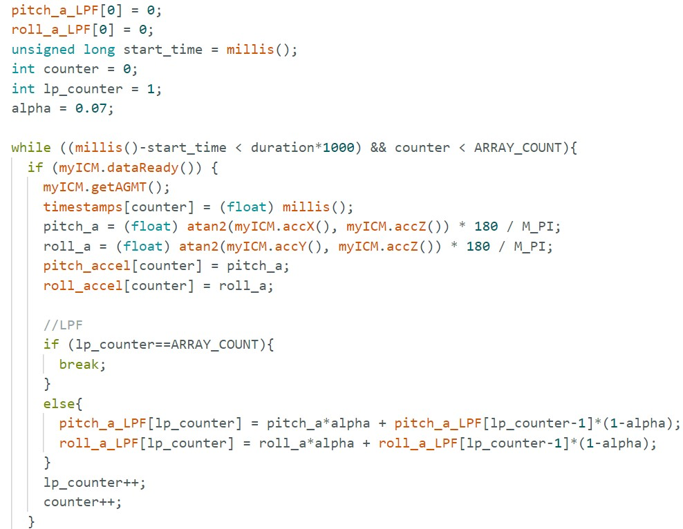

Lab 2 introduces the IMU. Through the tasks, data is collected via the IMU's
accelerometer and gyroscope. Various filtering techniques are used to get clean, accurate signals.
In this lab, we also received the physical robot and performed stunts with it.
Setup
AD0_VAL
According to lecture 4 code, AD0_VAL is the value of the last bit on the I2C address.
It is currently 1 because the AD0 pin doesn't have anything soldered to it.
IMU example code
I ran the IMU’s example code to observe accelerometer and gyroscope data. The accelerometer
measures in "mg" (milli-gravity), with one axis always reading ±1000 mg due to gravity, depending on
orientation. The gyroscope, in "DPS" (degrees per second), is unaffected by gravity.
Blink LED
To help me indicate whether or not my board is running, I implemented a blink sequence
in my setup function.
Accelerometer
After validating that the IMU was set up correctly, I collected accelerometer data to compute
pitch and roll angles (recall that the accelerometer cannot detect yaw).
Accelerometer rollAccelerometer pitch
Two-point calibration
I noticed that the data is smoother if I do not touch the board. For the two videos above,
I was applying a decent amount of force to the board to keep it in position. Thus, the data
was quite noisy. The numbers are close enough to what I expect them to be, so I thought a
two-point calibration was not necessary.
Data collection
In Python, I implemented a notification handler that would receive the accelerometer data
(timestamps, pitch, roll) as a string and store it into separate lists as floats. Then, I
used matplotlib to plot the data. In Arduino, I implemented a command, “GET_ACCEL”, that would
collect accelerometer data for a specified duration. The command has two loops: the first computes
pitch and roll angles from accelerometer data and adds them to separate arrays. The second send
the data via BLE to the computer.
Notification handler in PythonCommand used to get accelerometer data
For this task, I rotated the board about its x-axis so I expected pitch to be ~0.
I chose to collect 3 seconds worth of data; I verified this by computing the time elapsed
from the timestamps list that was sent over.
Fourier transform and low-pass filter
The raw accelerometer data is noisy, so a low-pass filter helps. A high cutoff keeps more noise,
while a low cutoff over-smooths and may lose details. I needed to find the optimal cutoff frequency.
Raw accelerometer data
To determine the cutoff, I analyzed the signal’s frequency spectrum by performing a Fourier transform
on my data. The raw data shows ~1Hz oscillations, confirmed by a frequency spectrum spike. Weak
signals appear up to 3-4Hz, so I include these frequencies. Using α=T/(T+RC) and f=1/(2πRC), I find
α≈0.07.
Frequency spectrum for this datasetPeriodogram generated using scipy.signal.periodogram()
I added the LPF code to my GET_ACCEL command. The updated code and filtered signal are shown:

Data collection loop in GET_ACCELFiltered signal with original
I also tested how effective the LPF would be when handling vibrational noise. I tapped the
table twice while the IMU was sitting flat. The raw data from this experiment shows two
main spikes. As seen in the image, the spikes and noise subside substantially after applying the LPF.
Gyroscope
Next, I collected data from the gyroscope to compute pitch, roll, and yaw angles. The data
reflects the sensor being rotated about its x-axis, so I don't expect pitch or yaw to change much.
Comparison to accelerometer
There are clear differences between the gyroscope and accelerometer data. Unlike the accelerometer,
the gyroscope is able to detect yaw by sensing acceleration about the z-axis. The gyroscope data is
significantly less noisy than the accelerometer data, but drift is very apparent, especially
in pitch data. The gyroscope’s roll signal also seems to undershoot its actual amplitude by a
significant margin.
Complementary filter
I implemented the complementary filter as follows: angle_c = (weight)*angle_accel +
(1-weight)*angle_gyro. I collected data for 4.5 seconds to validate that my complementary
filter can mitigate drift. To stay consistent with previous trials, I rotated the board about
its x-axis again, so I am expecting pitch to be ~0.
Weight = 0.3Weight = 0.5Weight = 0.8
I also tested to see if the complementary filter could mitigate quick vibrations by tapping
on the table while the board laid flat.
Weight = 0.3Weight = 0.5Weight = 0.8
From the plots generated, a weight of 0.5 is a good choice.
Sampling data
I stored gyroscope and accelerometer data in separate arrays. When sending data,
I loop through the arrays, combine each entry with a timestamp into a string, and write to
the string characteristic. Keeping them separate simplifies looping, data combination, and
debugging. For previous tasks, I computed pitch and roll angles in the same loop but stored
them separately for the same reasons.
Data collection loopData arrays used in the lab
I needed a space-efficient data type since BLE limits me to 150 bytes per transfer.
Strings were too large, and unsigned longs couldn’t store negative values. Between floats
and doubles, floats take less space, so I chose floats.
I implemented a STREAM_DATA command to collect raw IMU data. I was able to collect 5
seconds of data at ~300Hz. For previous tasks, I observed a similar sampling rate.
Computed sampling time and rate
I used float arrays of 1600 (6.4kB each). At 300Hz sampling, this stores 5.28s of data.
With 384kB RAM, the Artemis can hold up to 316.8s, though some RAM is needed for variables.
Stunts
Discussion and acknowledgements
Lab 2 was very helpful for familiarizing myself with the IMU....